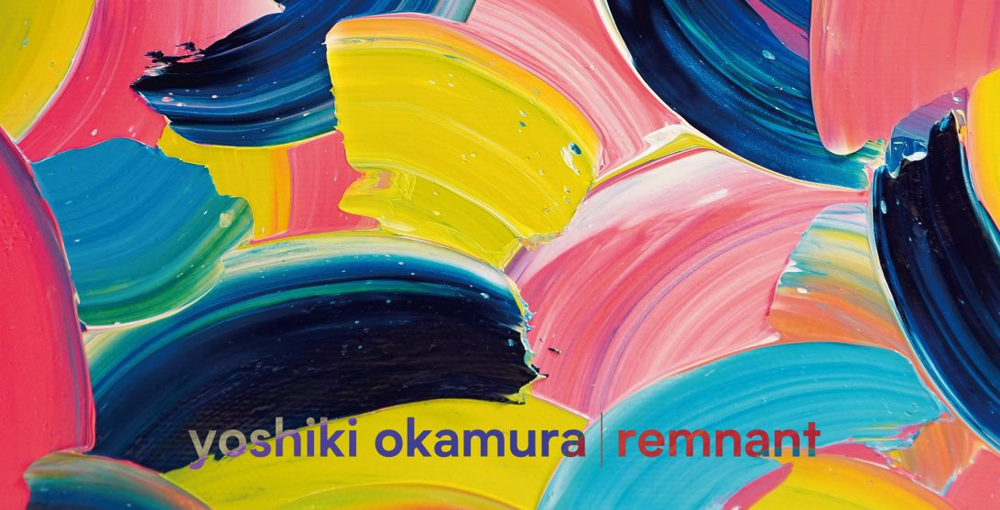
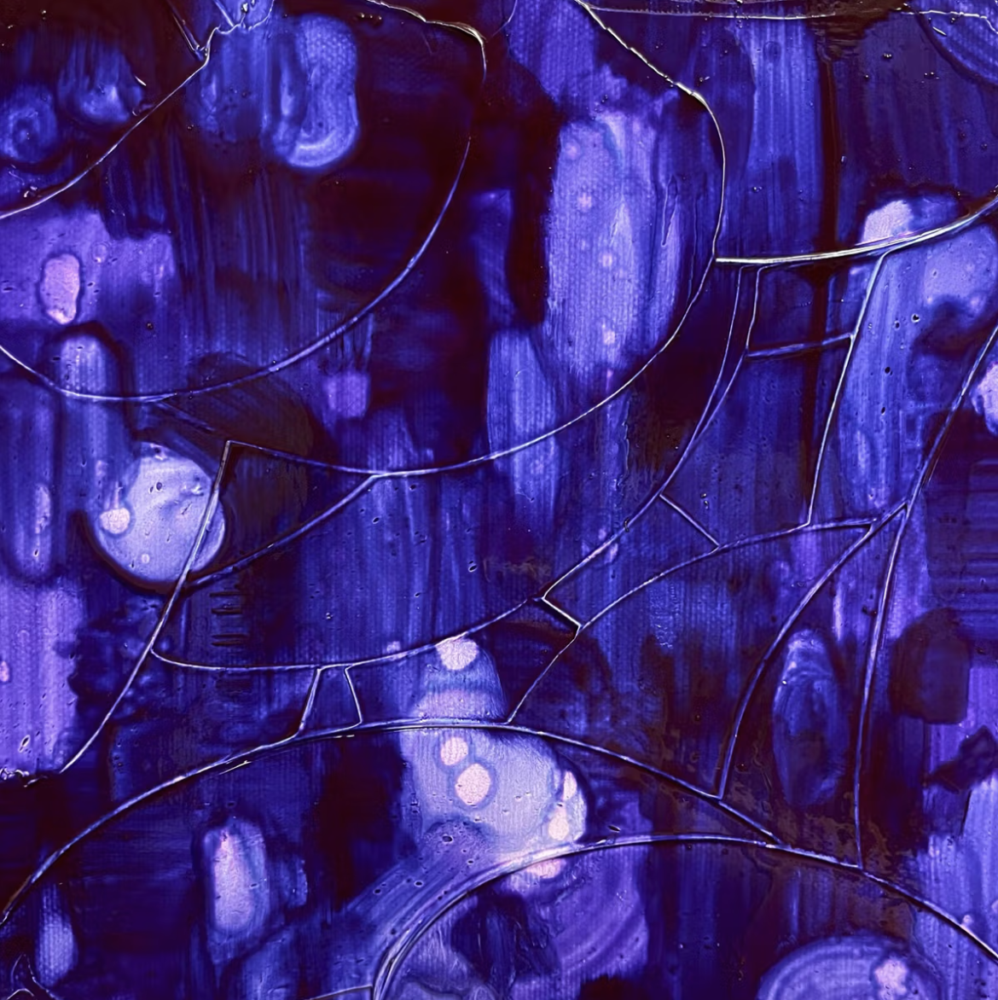
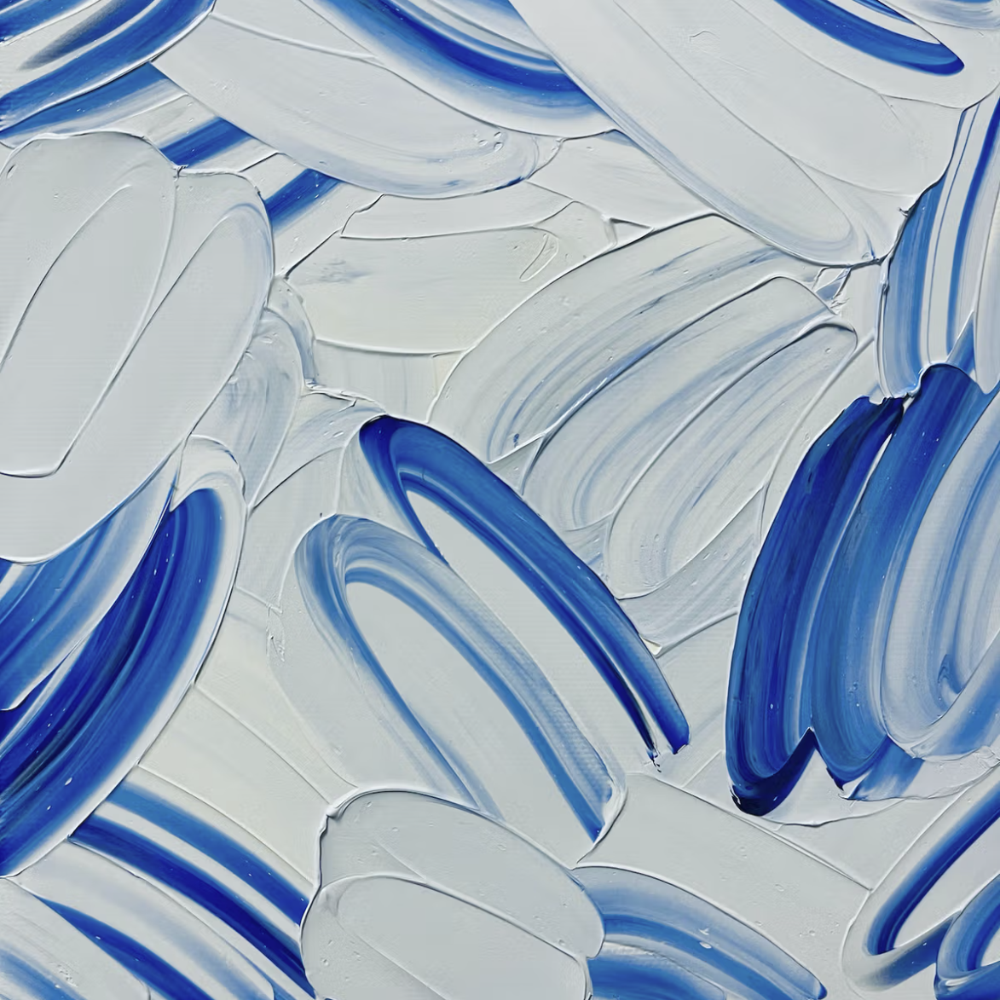
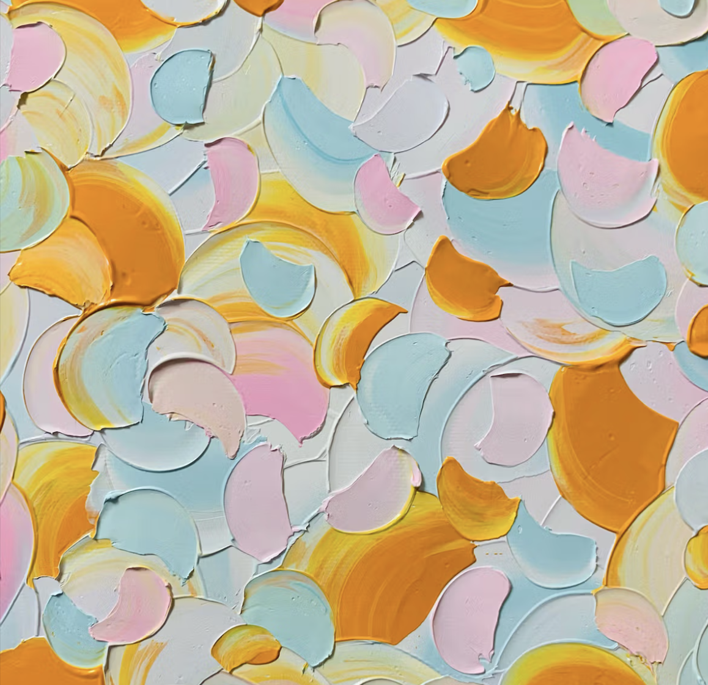
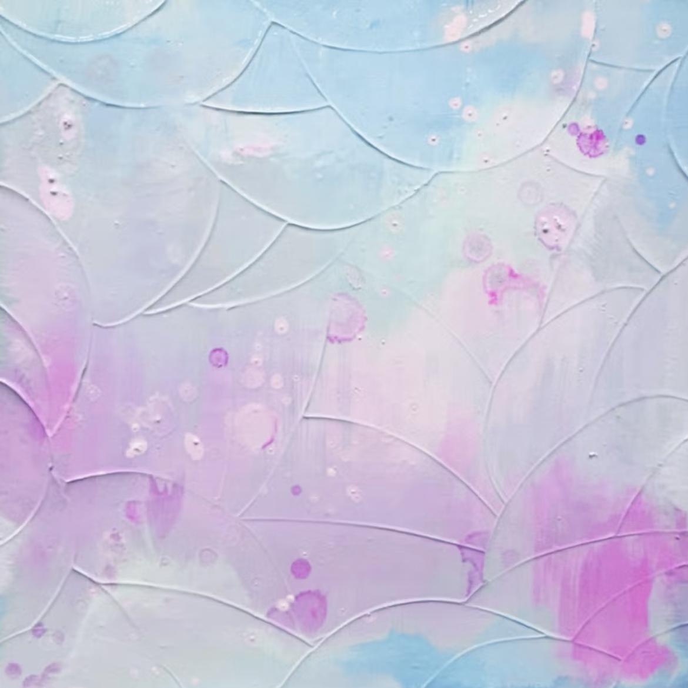

Yoshiki Okamura
Born in Tokyo in 1996.
Graduated from Musashino Art University in 2019.
A Japanese illustrator and artist.
Info
Has lived a nomadic life, moving between Tokyo, Kyoto, Hyogo, Prague, and Hokkaido. Her artistic activities center on capturing phenomena extracted from her everyday perspective and encapsulating them in life-sized works. Like a terrarium that fits in the palm of your hand, she aims to expand the function of painting by incorporating elements that evoke temperature, humidity, and taste into visual art, which has many tactile properties.
Works

Yoshiki Okamura's artwork explores everyday experiences through painting, color, and texture.
Projects
Gallery

入水

silent veiled

sugar sea
